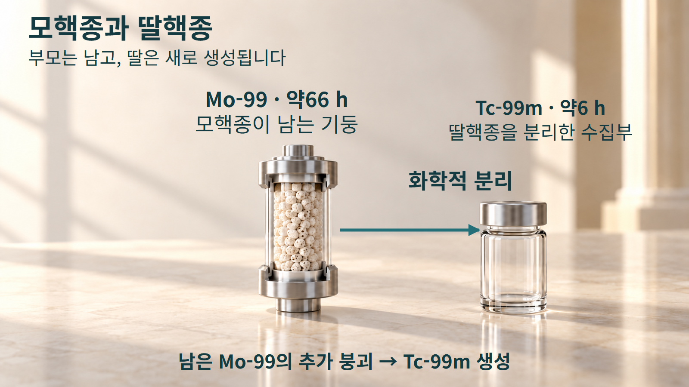
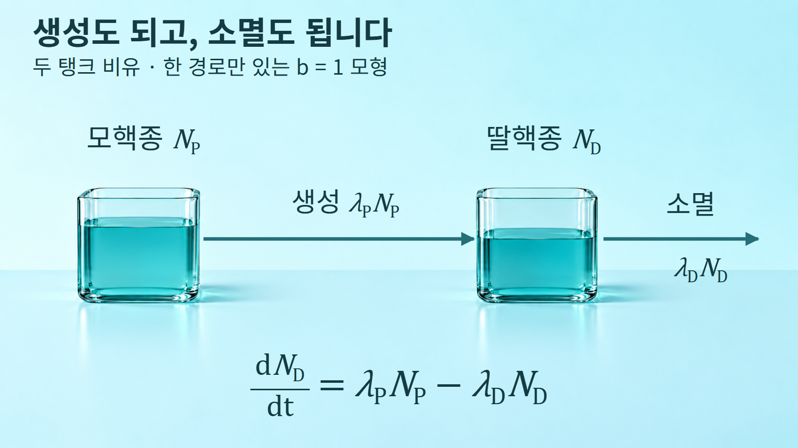
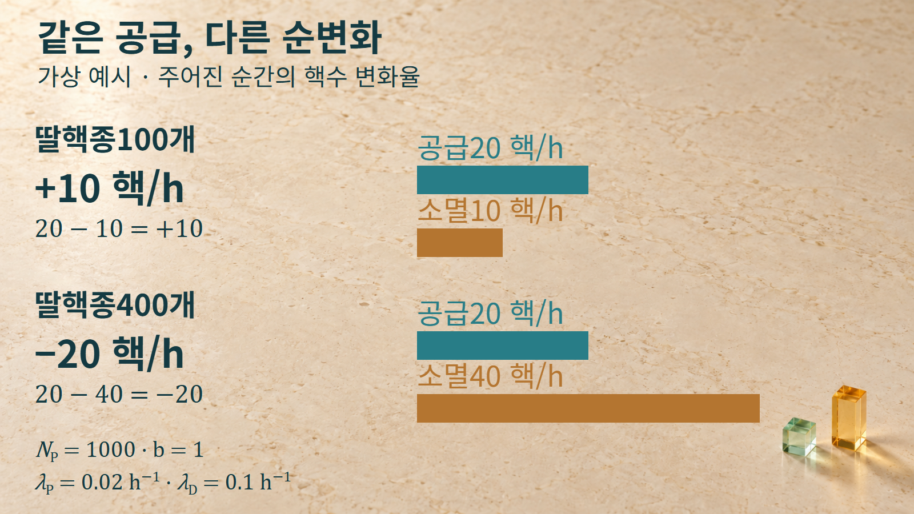

방사성붕괴와 시간 · 054
모핵종과 딸핵종
딸핵종의 양을 결정하는 생성과 소멸의 균형
방사성붕괴로 어떤 핵이 다른 핵 상태로 바뀌면, 그 경로의 앞쪽을 모핵종, 뒤쪽을 딸핵종이라고 부릅니다. 딸핵종이 방사성이라면 생성되는 동시에 다시 붕괴합니다. 따라서 딸핵종이 얼마나 남는지 알려면 공급과 소멸을 함께 세어야 합니다.
모핵종이 남아 있는 동안 새로운 딸핵종이 계속 생성될 수 있습니다.

사슬에서의 앞과 뒤
모핵종과 딸핵종은 특정한 붕괴 경로에서 정해지는 상대적인 역할입니다. P가 D로 바뀌고 D가 다시 G로 바뀌는 사슬에서는 D가 P의 딸핵종이면서 G의 모핵종입니다. ‘딸’이라는 말만으로 안정하다고 판단하거나 더 이상 붕괴하지 않는다고 생각하면 사슬의 중간 단계를 놓치게 됩니다.
이 관계가 반드시 서로 다른 원소 사이에만 생기는 것은 아닙니다. 이성질체 전이에서는 원자번호와 질량수가 같아도 핵의 에너지 상태가 바뀝니다. 예를 들어 Tc-99m의 m은 준안정상태를 구별하는 표시이며, Tc-99의 바닥상태와 같은 상태로 취급하지 않습니다. 어떤 부모와 어떤 딸을 계산에 넣는지 정할 때에는 핵종 이름뿐 아니라 핵상태도 확인합니다.
실제 붕괴 사슬에는 여러 분기와 중간 상태가 있을 수 있습니다. 여기서는 한 부모 P가 관심 대상인 딸 D를 공급하고, D가 다음 상태로 붕괴하는 단순한 모형에서 시작합니다. 관심 경로의 분기비를 b로 두면 부모 붕괴의 전부가 그 딸을 만드는 경우에만 b=1입니다.
생성과 소멸을 함께 계산하기
NP와 ND는 각각 모핵종과 딸핵종의 핵수입니다. 외부에서 핵종이 들어오거나 분리되어 나가지 않는 시간 구간을 생각하고, 붕괴상수 λP와 λD를 일정하게 둡니다. 모핵종의 감소율과 딸핵종의 순변화율은 다음처럼 다릅니다.
dNP/dt = −λPNP
dND/dt = bλPNP − λDND
한 경로만 있는 사슬에서는 딸핵종의 변화율을 공급항에서 소멸항을 뺀 값으로 나타냅니다. [1] 위 식은 그 공급항에 관심 경로의 분기비 b를 곱해 나타낸 것입니다. 부모가 붕괴하는 전체 속도 AP=λPNP와 관심 딸핵종이 생기는 속도 bAP를 구분해야 합니다.
딸핵종의 방사능 AD=λDND는 딸핵종 자체가 붕괴하는 양의 속도입니다. 반면 dND/dt는 생성에서 소멸을 뺀 결과이므로 양수·0·음수가 모두 가능합니다. 순변화가0이어도 공급과 붕괴가 계속될 수 있으며, 순변화가 음수라고 방사능이 음수가 되는 것은 아닙니다.
딸핵종의 변화율은 새로 생기는 속도에서 스스로 붕괴하는 속도를 뺀 값입니다.

두 탱크 그림에서는 안에 들어 있는 양을 핵수에 대응시킵니다. 연결 화살표는 딸핵종의 생성, 바깥으로 향하는 화살표는 딸핵종의 자체붕괴를 뜻합니다. 실제 핵이 관을 따라 이동하며 바뀐다는 설명은 아닙니다. 탱크의 높이나 물의 중력 흐름을 붕괴상수와 연결하는 정량 법칙도 사용하지 않습니다.
딸핵종의 양이 다른 두 경우
계산을 위해 b=1, λP=0.02 h−1, NP=1000개, λD=0.1 h−1인 가상 집단을 정합니다. 이 수치는 Mo-99나 Tc-99m의 실제 핵자료가 아닙니다. 아래 값은 정해진 순간의 집단 평균 변화율이며 개별 핵의 붕괴 시각을 예언하지 않습니다.
예시1: 딸핵종이100개일 때입니다. 공급률은1×0.02×1000=20핵/h이고, 딸핵종의 소멸률은0.1×100=10핵/h입니다. 따라서 순변화율은20−10=+10핵/h입니다. 자체붕괴가 일어나고 있어도 더 빠르게 새 딸핵종이 공급되므로 이 순간에는 딸핵종의 양이 증가합니다.
예시2: 딸핵종이400개일 때입니다. 부모의 양과 붕괴상수는 같으므로 공급률은 여전히20핵/h입니다. 그러나 딸핵종의 소멸률은0.1×400=40핵/h로 커집니다. 순변화율은20−40=−20핵/h가 되어 딸핵종이 감소합니다. 부모가 딸을 만들고 있다는 사실만으로 딸의 양이 증가한다고 결론낼 수 없는 경우입니다.
같은 부모 공급률에서도 딸핵종의 양에 따라 순증가와 순감소가 갈립니다.

시간 단위에도 주의합니다. 여기서는 λ를 h−1로 넣었으므로 결과가 시간당 핵수로 나옵니다. 예시1의 딸핵종 방사능을 Bq로 쓰려면10/3600≈0.00278 Bq로 환산합니다. 또한 시간이 지나면 NP와 ND가 바뀌므로, 처음의+10핵/h를 한 시간 전체에 그대로 적용해 정확히110개가 된다고 계산하지 않습니다.
Mo-99/Tc-99m 발생기의 원리
이 관계의 실제 응용은 Mo-99/Tc-99m 발생기에서 볼 수 있습니다. 모핵종으로부터 방사성 딸핵종이 생성되면 두 원소를 분리할 수 있습니다. [1] 모핵종의 일부가 붕괴해 줄어들더라도, 아직 남은 모핵종이 추가로 붕괴하면 새로운 딸핵종이 생길 수 있습니다.
TECHNELITE 발생기에서는 Mo-99가 알루미나 기둥에 흡착되어 있습니다. [2] 여기서 채택한 반감기는 Mo-99가66시간, Tc-99m이6.02시간이며, 이 글의 그림에서는 각각 약66시간과 약6시간의 시간척도로 표시합니다. 이 값은 최신 평가 핵자료의 정밀값을 새로 확정했다는 뜻은 아닙니다.
이 라벨은 Mo-99 붕괴 가운데 약88%가 Tc-99m을 만든다고 설명합니다. 따라서 위의 가상 b=1 예시를 실제 발생기에 그대로 대입하지 않습니다. 실제 경로에서는 분기비가 공급항에 들어가고, 딸핵종을 분리하는 순간에는 남은 딸핵종의 양이라는 초기조건도 달라집니다.
여기서 딸핵종의 재생은 이미 분리한 Tc-99m이 기둥으로 되돌아온다는 뜻이 아닙니다. 기둥에 남은 Mo-99의 추가 붕괴가 새 Tc-99m을 만듭니다. 그림의 기둥과 수집부는 이 관계를 보여주는 개념 모형이며 실제 제품의 조작도나 회수율을 나타내지 않습니다.
단순 사슬의 조건과 경계
처음부터 딸핵종이 들어 있으면 그 초기량도 계산에 포함해야 합니다. 공급이 시작될 때 딸핵종이 없었던 경우와, 예시2처럼 이미 많이 들어 있던 경우는 같은 부모를 가져도 서로 다른 시간 변화를 보입니다. 다른 경로에서도 같은 딸핵종이 공급되면 그 생성항을 더해야 하므로 단순한 두 항만으로는 충분하지 않습니다.
안정한 딸핵종은 이 모형에서 λD=0으로 놓을 수 있습니다. 그러면 자체붕괴로 빠져나가는 항이 없어집니다. 반대로 화학적 분리나 외부 유입이 있다면 핵붕괴에 의한 생성·소멸 외의 변화도 따로 다뤄야 합니다. 폐쇄계의 식을 분리 과정 전체에 아무 수정 없이 적용하지 않습니다.
Tc-99m에서 Tc-99로 가는 이성질체 전이에서는 원자번호43과 질량수99가 유지되지만 핵상태가 달라집니다. 이때에도 사슬에서의 앞과 뒤를 구별할 수 있습니다. 후속 Tc-99까지 안정핵종으로 묶어 버리지 않는 것이 중요합니다.
생성과 소멸이 오래 진행된 뒤 두 방사능이 어떤 비율을 갖는지는 다음 주제인 방사평형에서 다룹니다. 지금은 어느 순간의 딸핵종 변화가 공급률과 소멸률의 차이로 결정된다는 점을 먼저 확인합니다.
핵수와 속도의 비교
| 물리량 | 뜻 | 해석할 때 확인할 점 |
|---|---|---|
| NP, ND | 각 상태에 남은 핵수 | 같은 원소여도 핵상태를 구별합니다 |
| AP=λPNP | 부모의 전체 붕괴율 | 초 단위로 표현하면 Bq입니다 |
| bAP | 관심 딸핵종의 공급률 | 다른 분기가 있으면 AP보다 작습니다 |
| AD=λDND | 딸핵종 자체의 붕괴율 | 핵수가 양수이면 음수가 되지 않습니다 |
| dND/dt | 딸핵종 핵수의 순변화율 | bAP−AD이며 감소할 때 음수입니다 |
모핵종과 딸핵종이라는 이름은 붕괴 사슬의 관계를 정해 줍니다. 실제로 얼마나 남는지는 각 핵종의 양과 붕괴상수, 관심 경로의 분기비, 분리 여부를 함께 보아야 알 수 있습니다. 부모가 계속 딸을 만들어도 딸의 소멸이 더 빠르면 양은 줄어든다는 사실이 그 계산의 출발점입니다.